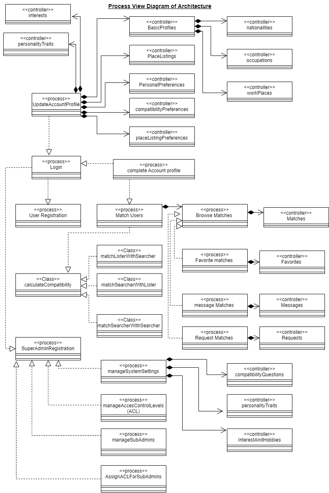

Shared Housing Using Matching Algorithms (SHUMA)
Technical Documentation
BSC Computer Science - Industrial Project 1
by: Daniel AtemAbstract
With soaring rent prices in big cities like Addis Ababa, paying rent for a significant portion of the market in the city has become a challenge. To solved this, shared housing has been taking place, but through referrals from trusted friends and family members; this manual process doesn't work for everyone as it can be time consuming and inconvenient, since the referrals have to be at the right place and right time.
Our solution is to match people with strangers whom they have a lot in common with so as to minimize any potential conflicts in living situations. Even though there are a number of competitor applications in the market, our approach in matching users is different. This application solves the problem using two algorithms: the first filters date, price and location and the second calculates the compatibility match percentage for each filtered result.
Our main project objective is to design a responsive and robust web application that will match users looking for shared housing. Aside from the matching, there are a number of useful feature we shall implement, some of which include: messaging, favorites, sending requests, filtering, google maps, task scheduling and background queued jobs.
Table of contents - SECTION 1
CHAPTER ONE: INTRODUCTION
- 1.1. Introduction
- 1.2. Background
- 1.3. Problem Statement
- 1.4. Project Objectives
- 1.4.1. General Objective
- 1.4.2. Specific Objective
- 1.5. Scope of the Project
- 1.6. Limitations
- 1.7. Methodology techniques
- 1.7.1 System Analysis and Design Methodology
- 1.7.2. System Implementation
- 1.7.3. Testing and Deployment Methodology
- 1.7.4. Development Environment
- 1.7.4.1. Software tools
- 1.7.4.2. Hardware tools
- 1.7.5. System Requirement
CHAPTER TWO: DESCRIPTION OF EXISTING SYSTEM
- 2.1. Introduction of existing system
- 2.2 Proposed System Description
- 2.3 Strength of Existing System
- 2.4 Weakness of the Existing System
CHAPTER THREE: SYSTEM FEATURES
- 3.1. Introduction
- 3.2. Requirements
- 3.2.1. User Requirement Definition
- 3.2.2. System Requirements Specification
- 3.2.3. Functional Requirements
- 3.2.4. Non-Functional Requirements
- 3.2.4.1. Product Requirements
- 3.2.4.2. Organizational Requirements
- 3.2.4.3. External Requirements
- 3.3. Analysis Models
- 3.3.1. Use case Model
- 3.3.1.1. Figure 3.1 Use Case Diagram for SHUMA User Account Activity
- 3.3.1.2. Figure 3.2 Use Case Diagram for SHUMA User Communication
- 3.3.1.3. Figure 3.3 Use Case Diagram for SHUMA Match Management
- 3.3.1.4. Figure 3.4 Use Case Diagram for SHUMA Matching System
- 3.3.1.5. Figure 3.5 Use Case Diagram for SHUMA System Management
- 3.3.2. Use case Description
- 3.3.3. Sequence Diagram
- 3.3.3.1. Figure 3.7 Sequence Diagram for SHUMA Signup
- 3.3.3.2. Figure 3.8 Sequence Diagram for SHUMA Login
- 3.3.3.3. Figure 3.9 Sequence Diagram for SHUMA Complete Account Profile
- 3.3.3.4. Figure 3.10 Sequence Diagram for SHUMA Update Specific Account Item
- 3.3.3.5. Figure 3.12 Sequence Diagram for SHUMA Add New Living Place
- 3.3.3.6. Figure 3.13 Sequence Diagram for SHUMA Send Match a Request
- 3.3.3.7. Figure 3.14 Sequence Diagram for SHUMA Send Match a Message
- 3.3.3.8. Figure 3.15 Sequence Diagram for SHUMA Manage Requests
- 3.3.3.9. Figure 3.16 Sequence Diagram for SHUMA Favorite Matches
- 3.3.3.10. Figure 3.17 Sequence Diagram for SHUMA Manage Favorites
- 3.3.3.11. Figure 3.18 Sequence Diagram for SHUMA Manage Users
- 3.3.3.12. Figure 3.19 Sequence Diagram for SHUMA Manage System Specific Setting Item
- 3.3.4. Activity Diagram
- 3.3.4.1. Figure 3.20 Activity Diagram for SHUMA Registration System
- 3.3.4.2. Figure 3.21 Activity Diagram for SHUMA Login System
- 3.3.4.3. Figure 3.22 Activity Diagram for SHUMA Account Profile Completion
- 3.3.4.4. Figure 3.23 Activity Diagram for SHUMA Update Specific Account Item
- 3.3.4.5. Figure 3.24 Activity Diagram for SHUMA Add New Living Place
- 3.3.4.6. Figure 3.25 Activity Diagram for SHUMA Send Match a Request
- 3.3.4.7. Figure 3.26 Activity Diagram for SHUMA Send Message to a Match
- 3.3.4.8. Figure 3.27 Activity Diagram for SHUMA Manage Requests
- 3.3.4.9. Figure 3.28 Activity Diagram for SHUMA Favorite Matches
- 3.3.4.10. Figure 3.29 Activity Diagram for SHUMA Manage Favorites
- 3.3.4.11. Figure 3.30 Activity Diagram for SHUMA System Match Users
- 3.3.4.12. Figure 3.31 Activity Diagram for SHUMA Calculate Compatibility Match Percentage
- 3.5. Class Diagram
- 3.3.5.1. Figure 3.32 Class Diagram for SHUMA user account
- 3.3.5.2. Figure 3.33 Class Diagram for SHUMA user matches
- 3.3.5.3. Figure 3.34 Class Diagram for SHUMA management system
- 3.3.6. User Interface Design (prototyping)
- 3.3.6.1. Figure 3.35 UI showing landing page - desktop view
- 3.3.6.2. Figure 3.36 UI showing landing page - mobile view
- 3.3.6.3. Figure 3.37 UI showing signup page - desktop view
- 3.3.6.4. Figure 3.38 UI showing signup page - mobile view
- 3.3.6.5. Figure 3.39 UI showing login page - desktop view
- 3.3.6.6. Figure 3.40 UI showing login page - mobile view
- 3.3.6.7. Figure 3.41 UI showing user page dropdown menu - mobile view
- 3.3.6.8. Figure 3.42 UI showing matches page with search and filters - desktop view
- 3.3.6.9. Figure 3.43 UI showing place matches list - desktop view
- 3.3.6.10. Figure 3.44 UI showing place matches list - mobile view
- 3.3.6.11. Figure 3.45 UI showing people matches list - desktop view
- 3.3.6.12. Figure 3.46 UI showing people matches list - mobile view
- 3.3.6.13. Figure 3.47 UI showing place profile page - desktop view
- 3.3.6.14. Figure 3.48 UI showing place profile page - mobile view
- 3.3.6.15. Figure 3.49 UI showing people profile page - desktop view
- 3.3.6.16. Figure 3.50 UI showing people profile page - mobile view
- 3.3.6.17. Figure 3.51 UI showing admin page with collapsed menu - desktop view
- 3.3.6.18. Figure 3.52 UI showing admin page with open menu showing menu options - desktop view
CHAPTER FOUR: SYSTEM DESIGN
- 4.1. Introduction
- 4.2. Purpose of the system design document(SDD)
- 4.3. Scope
- 4.4. Architectural Design
- 4.4.1. The MVC architectural Design pattern
- 4.4.2. Logical View of the Architecture
- 4.4.3. Process View
- 4.4.4. Deployment View
- 4.4.5. Database Design
- 4.4.6. ER Diagram for S.H.U.M.A application
CHAPTER FIVE: CONCLUSION AND RECOMMENDATION
- 5.1. Conclusion
- 5.2. Recommendation
Table of contents - SECTION 2
2. ALGORITHMS
- User Registration Algorithms
- User Profile Setup Algorithm
- Place Setup Algorithm
- Match Lister With Searcher Algorithm
- Match Searcher with Lister Algorithm
- Recalculate Compatibility Percentage Algorithm
- Update Matches Compatibility Percentage Algorithm
- Image Processing Algorithm
3. SECURITY METRICS
- System Level Security
- Database Level Security
4. CODING PROCEDURES AND STANDARDS
- 4.1. Code Naming Standards and Conventions
- 4.2. Coding Procedures
5. TESTING PROCEDURES
- 5.1. Test Case
- 5.2. Unit Test
- 5.3. Feature Test
- 5.4. System Testing
-
- 5.4.1. Test case for user registration
- 5.4.2. Test case for user profile setup
- 5.4.3. Test case for Lister place setup
- 5.4.4. Test case for User account settings
- 5.4.5. Test case for user requests
- 5.4.7. Test case for match Lister with Searcher
- 5.4.8. Test case for match Searcher with Lister
- 5.4.9. Test case for update compatibility question percentage
CHAPTER ONE: INTRODUCTION
1.1. Introduction
Shared housing using matching algorithms is a web based online platform that helps users list a room, house or apartment to be shared; it uses matching algorithms to ensure users get the best potential match to rent and live with.
Housing is one of the necessities for humans, and it accounts for the largest share of household consumption expenditure. In big and expensive cities like Addis Ababa, production falls far short of providing a decent and affordable shelter for most urban households. Thus, many of those who do not have enough money to live in the formal market are pressured to share housing with family or friends to rent.
What this web application will do is make the process of shared housing fast, efficient and convenient using various matching algorithms. Since not everyone has family member or friend that happens to be at the right place and time with free room or living space to share or rent; this application will be useful to many people who are facing this problem.
1.2. Background
As the second most populous country in Africa, Ethiopia is currently facing the pressure of rapid urban expansion and growing urban housing demand [1]. Ethiopian cities generally have a large proportion of sub-standard housing stock and deficient affordable formal rental market.
According to the recent statistics, Addis Ababa, the capital of Ethiopia, has a population of 4.6 million [2]. The dramatic increase in population implies a higher demand for housing which in turn increases the need for residential real estate. In 2015, the housing needs reached about 2,250, 831 units, which equated to a demand of 225,000 new housing per annum [3].
Housing is an essential need affecting the well-being of all citizens. Accordingly, providing adequate and affordable housing is a core national policy objective, especially given its impact on inequalities. Lower-income households typically live in lower-quality housing; on which they spend a greater share of their disposable income. One in three low-income private renters spends more than 40% of their disposable income on rental costs alone [4]. Overcrowded and poor living conditions, whether for formal or informal housing, further undermine well-being in many developing countries.
The need for renting depends on socioeconomic and demographic dynamics. Migrants from the countryside to urban areas, new job seekers who recently joined the labor market, students, divorced or separated families, may all rely at least temporarily on rental housing. For them, renting is a permanent or semi-permanent state. Rapid urbanization and the resulting population growth, both through migration and natural increase have stimulated most immigrants to new urban households initially to rent or share accommodation.
Since 2006, Ethiopia has undertaken an ambitious housing program to significantly increase the quantity of affordable urban housing, although the same challenges remain.
1.3. Problem Statement
Lack of sufficient and affordable housing is one of the major problems in Addis Ababa. Housing affordability compatible with different income levels of the city residents is lucking. It is recognized that the prices of housing tend to increase as the demand for housing increases [5].
Due to this massive shortage and skyrocketing renting costs, most people in the city cannot afford to live there; in some cases, left homeless or forced to live in condominiums houses which also have currently become expensive relative to the income of the target class [6], others are forced to live very far from their places of work or in places with insufficient and irregular water and electricity supply.
Therefore, for some people, the best way to mitigate some these problems; especially high rent costs, is to get referrals through friends or relatives to help them find someone who is hopefully, at the right place and right time for them to rent or live with. This doesn’t work for most people, thus, the next best thing is to match you with strangers that shares similar interest, has your preferred personality, preferences, interests, location, age and budget, with you, using algorithms that our system runs to find the best potential match.
Since most shared housing applications match like-for-like questions, we decided to take a different approach to do the matching using a compatibility matching algorithm inspired by a dating site Ok-Cupid [7] but modified for our shared housing situation. This matches users based on answering questions that have predefined weights and answers which they have to choose. The users have to answer these questions in two ways: they choose their answers and they choose answers for what they expect from a match; additionally, they select a predefined weight for each question they answer, the weight they choose is based on the questions importance in their current living situation.
1.4 Project Objectives
1.4.1 General Objectives
The general objective of this project is to design and implement a web based application that will help users search for or list shared housing such as rooms or apartments.
1.4.2 Specific Objectives
- To address and understand the problem facing the current housing system in Ethiopia, specifically Addis Ababa and offer practical solution.
- To develop an interactive and friendly user interface
- To identify functional and non-functional requirements.
- To implement a design methodology and use appropriate tools.
- To enable users to post living places like shared apartments.
- To enable users to search for living places like shared apartments or houses.
- To enable user matching based on various matching algorithms: the first on date, location, and price, the second calculates compatibility based on questions answered.
- To design and implement a calculate match percentage algorithm, based on questions answered.
- To design and implement search filters features for rooms, apartments and user search.
- To build an admin panel, for website feature management and system settings.
- To build a simple chat system among matched users.
- To design a relational database for the system.
- To test and deploy the system.
1.5. Scope of the Project
This project will focus on developing a web-based shared housing application that uses various matching algorithms for people leaving in expensive cities such as Addis Ababa. The system will let users post rooms or shared apartments, and users looking for rooms or shared apartments will be able to search for them. Furthermore, to minimize conflicts for people wanting to rent together, we will design and implement various matching algorithms. The first is a filter that the user sets, it filters based on date, rent price, and location. Once all these filtered results are obtained, the second algorithm is activated.
The second algorithm calculates the compatibility match percentage for each user in the filtered result. In order for this algorithm to work, during signup the user is asked a list of questions that have predefined answers and weight, the user answers the questions in two ways: first you provide your answer, then the answer you would like from your match and then you select the questions importance to the living situation; this is your compatibility data used to match you with other people.
In addition, the application will have an admin panel, here the admin will be able to manage users, site features and various application settings.
1.6. Limitations
Below are the limitations of the project:
- Due to limited time we cannot make the app multilingual to cater for users who prefer languages such as Amharic
- Due to time constraints we cannot integrate with a third party online payment system, for users to be able to subscribe for the system features.
- Writing API routes for Android and iOS app, our focus is now on the web app.
- For now, users looking for non-shared housing, such as apartments to live in alone won’t be able to find it on the web application.
1.7. Methodology Techniques
1.7.1 System Analysis and Design Methodology
We will us Rapid Application Development (RAD) methodology for faster software delivery and continuous iterations, since waterfall doesn’t allow for continuous iterations.
RAD is a form of agile software development methodology that prioritizes rapid prototype releases and iteration. This will provide us with enhanced flexibility and adaptability as we make adjustments quickly during the development process, quick iterations that reduce development time and speed up delivery; RAD also encourages code reuse.
1.7.2. System Implementation
We choose Object Oriented Programming (OOP) for our system implementation. OOP relies on the concept of classes and objects. It is used to structure a software program into simple, reusable pieces of code, which are used to create individual instances of objects.
The advantages of this approach include: code reusability, allows for class-specific behavior through polymorphism, it models complex things as reproducible, simple structures, easier to debug and secures information through encapsulation.
1.7.3. Testing and Deployment Methodology
Before we can deploy the application, we must prove that it works as intended and is free from defects. This requires a test plan that integrates several testing methodologies and a variety of test, each of which proves some aspect of our applications readiness for deployment. The tests include:
- Unit testing: these tests ensure each component works the way it was intended. They are very close to the application source. They consist in testing individual methods and functions of the classes, components or modules used by our software.
- Integration testing: They verify that different modules or services used by our application work well together. Like testing the interaction with the database. This tests require multiple parts of the application to be up and running.
- System testing: Here the complete integrated application is tested as a whole. It is carried out in an environment very similar to the production environment.
- Acceptance testing: These tests verify if the system satisfies its business requirements. They require the entire application to be running and focus on replication user behaviors.
1.7.4. Development Environment
1.7.4.1. Software tools
- Draw.io and Star UML:these are software modeling tools to help with drawing UML diagrams for the system analysis and design phase.
- Laragon:This is a portable, isolated, fast and powerful universal development environment for PHP. It is fast, lightweight, easy to us and extend.
- HeidiSQL:This is a free and open-source administration tool for MySQL. It makes it easy to manage database and integrates well with Laragon.
- Docker:Docker is a set of platform-as-a-service products that use OS-level virtualization to deliver software in packages called containers (isolated environments)
- Visual Studio Code:a source-code editor for writing code, debugging, code refactoring.
- GitHub:is a code hosting platform for version control and collaboration with teams.
- Programming languages:HTML, CSS, JavaScript, PHP, MySQL.
- Frontend Frameworks:Bootstrap, JQuery, VueJS
- Backend Framework:Laravel
- Figma:a graphics editor, user interface design app and prototyping tool.
- Google Chrome:web browser to test and view our application during development.
- Operating System:Windows 10 Operating System, x64 bits
1.7.4.2. Hardware Tools
- Personal Computer:
- 256 GB M.2 Solid State Drive
- 8GB RAM
- Core i5, 2.70 GHz
- 15.6†screen
- Built in Wi-Fi Support
- LAN support
- 1TB extra storage hard disc
- Ethernet Cable:to access internet, for further research and application development.
- USB flash disk:to back up project source code, documentation and other relevant software resources.
- Pen and Paper:to sketch out ideas and collect data from interviews.
1.7.5. System Requirements
Minimum system requirements for Visual Studio Code:
- 1.6 GHz or faster processor
- 1 GB of RAM
- Windows 7
- Microsoft .NET Framework 4.5.2
Minimum system requirements for HeidiSQL:
- 1.6 GHz or faster processor
- Windows 8 or higher
- 2GB RAM
Minimum system requirements for Laragon and docker:
- 1.6 GHz or faster processor
- Very lightweight.
- Core binary files less than 2MB.
- Uses less than 4MB RAM when running.
CHAPTER TWO: DESCRIPTION OF EXISTING SYSTEM.
2.1. Introduction to existing systems
Currently in Ethiopia, the existing online systems don’t have roommate matching. Applications such as Astawq and Mefthe allow users to advertise rental homes or rooms, but fail to match users. Furthermore, most are not focused and tend to offer a variety of services unrelated to housing.
In Ethiopia shared housing is mostly a manual process. Most users have to talk to their friends, friends of friends, and family members in order for them to find a shared co-living space and minimize on rental costs. This process can take weeks if you are lucky, but most of the time it usually takes months to find the right place. Furthermore, if conflicts arise, you have to start the whole process again which may not guarantee you a suitable place. This manual process is time consuming and inconvenient, in addition, not everyone has a family member or friend offering a co-living space at the right place and time.
In the United States of America and other developed and developing countries, application such as Roomster, Roomi and SpareRoom USA and UK allow users to search for roommates and spare rooms, flats to share, rooms for rent and flat mates. These application offer a variety of features such as: social logins to create your profile, search for roommates based on personal interests and living preferences, in-app messaging, show recent postings by people looking for roommates, posting apartments, rooms, and sublets within the app so matches can connect with one another, verification and background check.
Although these applications from USA offer a variety of useful features, they have not dealt with some issues well enough, such as user verification - here most still have fake adverts and incomplete user profiles, some are expensive as they offer a number of in-app purchases to unlock some features and inactive user profiles still exist on searches
2.2. Proposed System Description
Shared Housing using matching algorithms is a web based application that matches people looking for shared housing and people offering shared housing in Ethiopia. It will significantly help solve the problem of high rent costs and housing shortage in cities like Addis Ababa.
Instead of being manual, the system automates the room search process, and the roommate search process. Instead of having to manually search for users or rooms the proposed system shows you potential matches with detailed relevant information on what you are looking for.
2.3. Strength of Existing System
Getting referrals through a friends usually means that it is someone close to you, it usually means his personality traits are well known and you can easily tell whether you will get along or not.
There are no associated charges or advertisement in the manual process, as the users are communicated directly with other users, via phone or phase to phase.
The existing system in other countries such as the USA and UK have a variety of helpful features such as social logins to create your profile, search for roommates based on personal interests and living preferences, in-app messaging, show recent postings by people looking for roommates, posting apartments, rooms, and sublets within the app so matches can connect with one another, verification and background check.
2.4. Weakness of the Exiting System.
The weaknesses of existing systems include lack of, or incomplete user verification, where most still have fake adverts and incomplete user profiles, some are expensive as they offer a number of in-app purchases to unlock some features and inactive user profiles still exist on searches. Some other weaknesses are given below:
- Some incomplete user profiles.
- Faker adverts on the platform.
- Expensive to pay for in-app purchases to unlock some premium features.
- Inactive user profiles still exist on searches, thus, misleading and frustrating some users.
CHAPTER THREE: SYSTEM FEATURES.
3.1. Introduction
In this chapter, we look at the functional and non-functional requirement and various analysis models that depict the application domain.
3.2. Requirements
In this chapter, we look at the functional and non-functional requirement and various analysis models that depict the application domain.
3.2.1. User Requirement Definition
The system connects users searching for a place with users listing a place to be shared. These users will be matched by the system based on the type of place and user they are looking for, and calculates to what extent they will be compatible living together based on the compatibility questions they answered
3.2.2. System Requirements Specification
- The system shall allow users to list a place to live in. To list a place, the user is required to enter the details of that specific place.
- Only authenticated users are allowed to view list of all matches
- The system shall allow users to search for a place to live in. To search for a place, the user is required to list the preference of the desired place.
- The three types of users: The Lister, the Searcher and the Admins. The Lister and the Searcher are both required by the system to complete their profile by: selecting what they are looking for, entering basic information, entering profile information, entering roommate or housemate compatibility preferences, and answering compatibility questions.
- The order of matching algorithms is: first all users matching the preferences are obtained, then compatibility algorithm runs.
- Once the users have signed up and completed their profile, a job to process the matching for the users in placed in a queue in the database (to defer the execution since the processing of matches can take time)
- If a matching job fails due to a bug, the system can retry the failed jobs without any problems. Any failed jobs are marked as failed, when a job fails, it will be persisted in the 'failed_jobs' table.
- Processing of the jobs is done in parallel to reduce the time it takes to process the matching tasks.
- To keep track of active and inactive users; whenever a user accesses a page, last_active_time in the database table is updated. Once every 24 hours a cron job is scheduled to run in the background to query all the users that have not been active for a specified period of time specified by the admin settings. These users accounts are automatically set as inactive.
- A user listing a place can favorite match results so that they can easily access their favorite matches.
- A user searching a place can favorite match results that they can easily access their favorite matches.
- Both users - the Lister and the Searcher can message each other through the chat functionality.
- Both users can send each other a request.
- The Lister sends can send a request to Searcher whom he or she is satisfied with. If the Searcher accepts the request, they are added as a tenant of the shared place.
- The Searcher can send a request to the Lister whom he or she is satisfied with. If the Lister accepts the request, they are added as a tenant of the shared place.
- The system allows both a Lister and a Searcher to filter down their matches.
- If a user modifies their preferences, a new job is dispatched to updated the matches.
- Once a new user signup, he or she is matched against all users that match his or her preferences and compatibility match is done.
- The system shall allow super admin can edit, update and delete user accounts.
- The system shall allow super admin can activate and deactivate user accounts.
- The system shall allow super admin to control website settings.
- The system shall allow super admin to create, update and delete compatibility questions.
- The super admin can verify user accounts.
3.2.3. Functional Requirements
- The system shall allow users to be of two types: The Lister – who is listing a place and The Searcher – who is searching for a place.
- The Lister, shall be able to list the place for searchers
- The Lister shall be able to fill in the details of the place they are offering.
- The Lister shall be able to fill in the details of the kind of room/housemate preferences they are looking for.
- The Lister shall be answer compatibility questions so as to be matched based on compatibility with the users looking for a place – the Searchers.
- The Searcher, shall be able to be matched with listed places.
- The Searcher shall be able to fill in details of the kind of place they are looking for.
- The Searcher shall be able to fill in the details of the kind of the kind of room/housemate preferences they are looking for.
- The Searcher shall be able to answer compatibility questions so as to be matched based on compatibility with the users listing a place – the Lister.
- Both The Searcher and The Lister can search and filter through the matches they get.
- Both The Lister and Searcher can favorite their matches for easy access
- Both The Lister and Searcher can message each other.
- Both The Lister and Searcher can send Request (a request to live together) to each other.
- Both The Lister and Searcher can accept or reject a request.
- Both The Lister and Searcher can be notified of new matches, new messages.
- Both The Lister and Searchers can view their matches profiles in detail.
- The Lister and Searcher shall be able to update their profiles and account information.
- Each user of the system is uniquely identified by and ID and username
3.2.4. Non-Functional Requirements
3.2.4.1. Product Requirements.
- The system shall be able to authenticate users of the system using their username and password to be able to log in.
- The system shall be able to authorize normal users and admins to control access levels.
- The system shall encrypt user passwords and stored in the database securely.
- The system shall validate data entry and prompt the user when invalid data is entered
- The system shall be able to show matches to both the Searcher and Lister.
- The system shall be able to determine the type of user: The Searcher or Lister.
- The system shall not allow users to use all the features unless they are logged in with an active profile and verified status.
- Once the user adjusts their preferences or filter or compatibility questions a new job is queued in the database to update the matches for the user. This matching is not done immediately as it can affect performance since the matching algorithms can take a while to process – a couple of seconds or micro seconds or even minutes depending on the number of matches to loop through and number of compatibility questions.
- The system shall remember when the user last logged in.
- The system shall be able to remember when the user was last active.
- The system shall be able to automatically deactivate inactive profiles. A Cron job runs every day at midnight and checks the last active date for user profiles, if they are not within the specified duration, those user accounts are deactivated.
- The system shall be available to all users 24hrs a day.
- The system shall be able to show Searcher other similar Searchers to them.
- The system shall have a consistent and user friendly user interface.
- The system shall be able to verify users that are logging in the users that are signing up.
- The system shall not reveal private information such as phone numbers and email address and access to social media profiles unless users explicitly request them from each other via messaging.  The system shall compute the compatibility of matches and show it as a percentage to the users and their matches.
- All pages should take less than 3 seconds to load for a good user experience – with exception of factors the system cannot control like bad network condition.
- The system shall be able to store user profile images, and images of the places of living.
- The system application shall work on the web, and shall be access on all popular major browsers.
- They system UI shall be responsive and thus can be used comfortably on mobile, tablet and desktop.
- The system shall be able to determine roles and permissions for admins
- The system shall be able to back up the data every day at 3a.m by scheduling a cron job to perform that task.
- The system shall allow users of the system to report any issues to the admins via email using contact form where they can specify the issues.
3.2.4.2. Organizational Requirements
- The system shall be developed using PHP programming language
- The systems front-end shall run on a browser as a web application
- The system shall use the Apache web server and use MySQL database.
- The system shall be developed on visual studio code.
3.2.4.3. External Requirements
- The system shall use GitHub for source control.
- The system shall use google maps API to show location of listed places.
3.3. Analysis Models
3.3.1. Use Case Model
The use case identified the actors involved in an interaction and names the type of interactions. The set of use cases represents all of the possible interactions that will be descried in the system requirements. Actors in the process, who may be human or other systems are represented by the stick figures. Each class of interaction is represented as a named ellipse.
Actors in our system include: The Lister - the user who lists a shared place, The Searcher - the user who is searching for a shared place, the admin and the System.
3.3.1.1. Figure 3.1 Use Case Diagram for SHUMA User Account Activity

3.3.1.2. Figure 3.2 Use Case Diagram for SHUMA User Communication
3.3.1.3. Figure 3.3 Use Case Diagram for SHUMA Match Management
3.3.1.4. Figure 3.4 Use Case Diagram for SHUMA Matching System
3.3.1.5. Figure 3.5 Use Case Diagram for SHUMA System Management
3.3.2. Use Case Description
Use Case Description is a description of each use case, it shows what the use case is and how it functions
*Due to the large number of tables showing the use case descriptions, we won't be able to show all of them here. Download the PDF version of this technical documentation to access all the use case descriptions.
3.3.3. Sequence Diagram
A sequence diagram is a Unified Modelling Language (UML) diagram that illustrates the sequence of messages between objects in an interaction, it shows object interactions arranged in time sequence. It also depicts the objects involved in the scenario and the sequence of the messages exchanged between the objects needed to carry out the functionality of scenario.
3.3.3.1. Figure 3.7 Sequence Diagram for SHUMA Signup
3.3.3.2. Figure 3.8 Sequence Diagram for SHUMA Login
3.3.3.3. Figure 3.9 Sequence Diagram for SHUMA Complete Account Profile
3.3.3.4. Figure 3.10 Sequence Diagram for SHUMA Update Specific Account Item
3.3.3.5. Figure 3.12 Sequence Diagram for SHUMA Add New Living Place
3.3.3.6. Figure 3.13 Sequence Diagram for SHUMA Send Match a Request
3.3.3.7. Figure 3.14 Sequence Diagram for SHUMA Send Match a Message
3.3.3.8. Figure 3.15 Sequence Diagram for SHUMA Manage Requests
3.3.3.9. Figure 3.16 Sequence Diagram for SHUMA Favorite Matches
3.3.3.10. Figure 3.17 Sequence Diagram for SHUMA Manage Favorites
3.3.3.11. Figure 3.18 Sequence Diagram for SHUMA Manage Users
3.3.3.12. Figure 3.19 Sequence Diagram for SHUMA Manage System Specific Setting Item
3.3.3. Activity Diagram
Activity diagrams are typically used for business process modeling, they are used to model the logic captured by a single use case or usage scenario, or for modeling the detailed logic of a business rule. They are used to describe business activities and software systems' functionality.
3.3.4.1. Figure 3.20 Activity Diagram for SHUMA Registration System
3.3.4.2. Figure 3.21 Activity Diagram for SHUMA Login System
3.3.4.3. Figure 3.22 Activity Diagram for SHUMA Account Profile Completion

3.3.4.4. Figure 3.23 Activity Diagram for SHUMA Update Specific Account Item
3.3.4.5. Figure 3.24 Activity Diagram for SHUMA Add New Living Place
3.3.4.6. Figure 3.25 Activity Diagram for SHUMA Send Match a Request
3.3.4.7. Figure 3.26 Activity Diagram for SHUMA Send Message to a Match
3.3.4.8. Figure 3.27 Activity Diagram for SHUMA Manage Requests
3.3.4.9. Figure 3.28 Activity Diagram for SHUMA Favorite Matches
3.3.4.10. Figure 3.29 Activity Diagram for SHUMA Manage Favorites
3.3.4.11. Figure 3.30 Activity Diagram for SHUMA System Match Users
3.3.4.12. Figure 3.31 Activity Diagram for SHUMA Calculate Compatibility Match Percentage
3.3.5. Class Diagram
A class diagram is the heart of UML. It represents the core purpose of UML because it separates the design elements from the coding of the system. UML was set up as a standardized model to describe an object-oriented programming approach. Since classes are the building block of object, class diagrams are the building blocks of UML.
3.3.5.1. Figure 3.32 Class Diagram for SHUMA user account
3.3.5.2. Figure 3.33 Class Diagram for SHUMA user matches
3.3.5.3. Figure 3.34 Class Diagram for SHUMA management system
3.3.6. User Interface Design (prototyping)
User Interface (UI) Design focuses on anticipating what users might need to do and ensuring that the interface has elements that are easy to access, understand, and use to facilitate those actions. UI brings together concepts from interaction design, visual design, and information architecture.
3.3.6.1. Figure 3.35 UI showing landing page - desktop view
3.3.6.2. Figure 3.36 UI showing landing page - mobile view
3.3.6.3. Figure 3.37 UI showing signup page - desktop view

3.3.6.4. Figure 3.38 UI showing signup page - mobile view
3.3.6.5. Figure 3.39 UI showing login page - desktop view
3.3.6.6. Figure 3.40 UI showing login page - mobile view
3.3.6.7. Figure 3.41 UI showing user page dropdown menu - mobile view
3.3.6.8. Figure 3.42 UI showing matches page with search and filters - desktop view
3.3.6.9. Figure 3.43 UI showing place matches list - desktop view
3.3.6.10. Figure 3.44 UI showing place matches list - mobile view
3.3.6.11. Figure 3.45 UI showing people matches list - desktop view
3.3.6.12. Figure 3.46 UI showing people matches list - mobile view
3.3.6.13. Figure 3.47 UI showing place profile page - desktop view
3.3.6.14. Figure 3.48 UI showing place profile page - mobile view
3.3.6.15. Figure 3.49 UI showing people profile page - desktop view
3.3.6.16. Figure 3.50 UI showing people profile page - mobile view
3.3.6.17. Figure 3.51 UI showing admin page with collapsed menu - desktop view
3.3.6.18. Figure 3.52 UI showing admin page with open menu showing menu options - Desktop View
CHAPTER FOUR: SYSTEM DESIGN.
4.1. Introduction
This chapter will introduce about proposed system design specification. It describes the system at the architectural level, including subsystems and their services, hardware mapping, data management, access control, global software control structure, and boundary conditions. The design specification documents the high-level system design and the low-level detailed design specification. The design document will be used for managing design architecture of the project.
4.2. Purpose of the system design document(SDD)
The results of the system design process are recorded in the System Design Document. This document completely describes the system at the architecture level, including subsystems and their services, hardware mapping, data management, access control, global software control structure, and boundary conditions.
4.3. Scope
Systems It extends all the systems and sub systems of the system.
4.4. Architectural Design
Architectural design is the process of defining a structured solution that meets all of the technical and operational requirements, while optimizing common quality attributes such as performance, security, and manageability.
We used the three-tier architecture layered architecture with application logic monolithic. The layered architecture helps with separation of concerns, and we think for now a monolithic approach is preferable to a micro-service approach in the beginning since it will offer us easy and faster development.
The architectural design pattern we will use in the application is the MVC architectural pattern. MVC consists of three parts: Model, View, Controller. The Model handles data logic, the view displays the information from the model to the user, the Controller controls the data flow into a model object and updates the view whenever the data changes.
The MVC architectural Design pattern
Logical View of the Architecture
Process View

Deployment View
Database Design
A well designed database gives users access to essential information. In our database design process, we ensured all the tables are in third normal form. Third normal form is enough for most relational databases, which is also for this case.
E.R diagram for SHUMA Application
CHAPTER FIVE: CONCLUSION AND RECOMMENDATION
5.1. Conclusion
As we have documented our project findings above, the living costs in big cities such as Addis Ababa has been going up this has made it very difficult for most citizens to pay their rent or find living space in convenient areas. We proposed a web based system to solve this problem through shared housing using matching algorithms; the matching algorithms are very important - users are matched mainly on location, price and compatibility, this reduces the likelihood of conflict in living situations and increase convenience for the users by for example significantly reducing their rent costs and being in a suitable location. The compatibility matching algorithm matches users based on answering questions that have predefined weights and answers which they have to choose. The users have to answer these questions in two ways: they choose their answers and they choose answers for what they expect from a match; additionally, they select a predefined weight for each question they answer based on the questions importance to in their current living situation.
This system will offer detailed information relevant to a shared housing situations, such as relevant details place listings and user profiles. Other useful features include saving favorites, sending messages, sending request, real time notifications, search filters, and showing match percentages. Some features such as verification of users and places couldn't be currently fully automated, as some information needs a human to verify.
In conclusion, some important aspects of the application performance and convenience include: queued job and task scheduling. We realized that calculating compatibility match is a time consuming task that could significantly slow down the system, we therefore, used queued jobs that defer the matching processing to run in the background as the user continues to browse without any performance hit. We used task scheduling to ensure inactive users are automatically deactivated, a convenient feature to ensure active users are only matched with other active users.
5.2. Recommendation
Due to time constraints we weren't able to implement and fully address some features that should been documented and implemented, they include:
- Payments system to integrate mobile money and other popular online payment systems.
- Multilingual support, such as Amharic.
- Spam Bot prevention feature, to prevent bots from spamming the website.
- Social Network “login with†option, such as Telegram and Facebook, for user convenience.
- Automatic user profile picture verification, to ensures users upload relevant profile photos.
- Reporting and flagging features, to ensure user report or flag suspicious users or content.
- Feature for Landlords and housing brokers to be able to list empty properties to be matched with users who can optionally live together and share rent costs.
- Legal online shared-housing agreements between the users and or landlords in case of some disagreements between users such as how to handle overdue rent payments.
- A blog system to provide useful and relevant information to users of the platform related to housing and shared housing.
REFERENCES
[1] Matsumot, T. and Crook, J., 2021. Sustainable and inclusive housing in Ethiopia: a policy assessment. Coalition for Urban Transitions. London and Washington, DC. Available at: https://urbantransitions.global/publications.
[2] United Nations, Department of Economic and Social Affairs, Population Division (2016), World Population Prospects: The 2016 Revision, Key Findings and Advance Tables.
[3] Paulos Birhanu, Study on private residential real estate development in Addis Ababa, (M.Sc. Thesis), AAiT, School of Civil and Environmental Engineering, Addis Ababa, 2011.
[4] OECD, 2021. Building for a better tomorrow: Policies to make housing affordable. Employment, Labor and Social Affairs Policy Briefs.
[5] Selam Yohannes and Abebe Dinku, Study on Housing provisions and affordability in private residential real estates in Addis Ababa, AAiT, Shool of Civil and Environmental Engineering, 2018.
[6] Assessment of affordability of condominium houses: The case of Addis Ababa housing construction project office at Tuludimitu Site. By Endale Mekonnen
[7] https://ed.ted.com/lessons/inside-okcupid-the-math-of-online-dating-christian-rudder#review
Navigation
Table of Contents
Table of contents
CHAPTER ONE: INTRODUCTION
- 1.1. Introduction
- 1.2. Background
- 1.3. Problem Statement
- 1.4. Project Objectives
- 1.4.1. General Objective
- 1.4.2. Specific Objective
- 1.5. Scope of the Project
- 1.6. Limitations
- 1.7. Methodology techniques
- 1.7.1 System Analysis and Design Methodology
- 1.7.2. System Implementation
- 1.7.3. Testing and Deployment Methodology
- 1.7.4. Development Environment
- 1.7.4.1. Software tools
- 1.7.4.2. Hardware tools
- 1.7.5. System Requirement
CHAPTER TWO: DESCRIPTION OF EXISTING SYSTEM
- 2.1. Introduction of existing system
- 2.2 Proposed System Description
- 2.3 Strength of Existing System
- 2.4 Weakness of the Existing System
CHAPTER THREE: SYSTEM FEATURES
- 3.1. Introduction
- 3.2. Requirements
- 3.2.1. User Requirement Definition
- 3.2.2. System Requirements Specification
- 3.2.3. Functional Requirements
- 3.2.4. Non-Functional Requirements
- 3.2.4.1. Product Requirements
- 3.2.4.2. Organizational Requirements
- 3.2.4.3. External Requirements
- 3.3. Analysis Models
- 3.3.1. Use case Model
- 3.3.1.1. Figure 3.1 Use Case Diagram for SHUMA User Account Activity
- 3.3.1.2. Figure 3.2 Use Case Diagram for SHUMA User Communication
- 3.3.1.3. Figure 3.3 Use Case Diagram for SHUMA Match Management
- 3.3.1.4. Figure 3.4 Use Case Diagram for SHUMA Matching System
- 3.3.1.5. Figure 3.5 Use Case Diagram for SHUMA System Management
- 3.3.2. Use case Description
- 3.3.3. Sequence Diagram
- 3.3.3.1. Figure 3.7 Sequence Diagram for SHUMA Signup
- 3.3.3.2. Figure 3.8 Sequence Diagram for SHUMA Login
- 3.3.3.3. Figure 3.9 Sequence Diagram for SHUMA Complete Account Profile
- 3.3.3.4. Figure 3.10 Sequence Diagram for SHUMA Update Specific Account Item
- 3.3.3.5. Figure 3.12 Sequence Diagram for SHUMA Add New Living Place
- 3.3.3.6. Figure 3.13 Sequence Diagram for SHUMA Send Match a Request
- 3.3.3.7. Figure 3.14 Sequence Diagram for SHUMA Send Match a Message
- 3.3.3.8. Figure 3.15 Sequence Diagram for SHUMA Manage Requests
- 3.3.3.9. Figure 3.16 Sequence Diagram for SHUMA Favorite Matches
- 3.3.3.10. Figure 3.17 Sequence Diagram for SHUMA Manage Favorites
- 3.3.3.11. Figure 3.18 Sequence Diagram for SHUMA Manage Users
- 3.3.3.12. Figure 3.19 Sequence Diagram for SHUMA Manage System Specific Setting Item
- 3.3.4. Activity Diagram
- 3.3.4.1. Figure 3.20 Activity Diagram for SHUMA Registration System
- 3.3.4.2. Figure 3.21 Activity Diagram for SHUMA Login System
- 3.3.4.3. Figure 3.22 Activity Diagram for SHUMA Account Profile Completion
- 3.3.4.4. Figure 3.23 Activity Diagram for SHUMA Update Specific Account Item
- 3.3.4.5. Figure 3.24 Activity Diagram for SHUMA Add New Living Place
- 3.3.4.6. Figure 3.25 Activity Diagram for SHUMA Send Match a Request
- 3.3.4.7. Figure 3.26 Activity Diagram for SHUMA Send Message to a Match
- 3.3.4.8. Figure 3.27 Activity Diagram for SHUMA Manage Requests
- 3.3.4.9. Figure 3.28 Activity Diagram for SHUMA Favorite Matches
- 3.3.4.10. Figure 3.29 Activity Diagram for SHUMA Manage Favorites
- 3.3.4.11. Figure 3.30 Activity Diagram for SHUMA System Match Users
- 3.3.4.12. Figure 3.31 Activity Diagram for SHUMA Calculate Compatibility Match Percentage
- 3.5. Class Diagram
- 3.3.5.1. Figure 3.32 Class Diagram for SHUMA user account
- 3.3.5.2. Figure 3.33 Class Diagram for SHUMA user matches
- 3.3.5.3. Figure 3.34 Class Diagram for SHUMA management system
- 3.3.6. User Interface Design (prototyping)
- 3.3.6.1. Figure 3.35 UI showing landing page - desktop view
- 3.3.6.2. Figure 3.36 UI showing landing page - mobile view
- 3.3.6.3. Figure 3.37 UI showing signup page - desktop view
- 3.3.6.4. Figure 3.38 UI showing signup page - mobile view
- 3.3.6.5. Figure 3.39 UI showing login page - desktop view
- 3.3.6.6. Figure 3.40 UI showing login page - mobile view
- 3.3.6.7. Figure 3.41 UI showing user page dropdown menu - mobile view
- 3.3.6.8. Figure 3.42 UI showing matches page with search and filters - desktop view
- 3.3.6.9. Figure 3.43 UI showing place matches list - desktop view
- 3.3.6.10. Figure 3.44 UI showing place matches list - mobile view
- 3.3.6.11. Figure 3.45 UI showing people matches list - desktop view
- 3.3.6.12. Figure 3.46 UI showing people matches list - mobile view
- 3.3.6.13. Figure 3.47 UI showing place profile page - desktop view
- 3.3.6.14. Figure 3.48 UI showing place profile page - mobile view
- 3.3.6.15. Figure 3.49 UI showing people profile page - desktop view
- 3.3.6.16. Figure 3.50 UI showing people profile page - mobile view
- 3.3.6.17. Figure 3.51 UI showing admin page with collapsed menu - desktop view
- 3.3.6.18. Figure 3.52 UI showing admin page with open menu showing menu options - desktop view
CHAPTER FOUR: SYSTEM DESIGN
- 4.1. Introduction
- 4.2. Purpose of the system design document(SDD)
- 4.3. Scope
- 4.4. Architectural Design
- 4.4.1. The MVC architectural Design pattern
- 4.4.2. Logical View of the Architecture
- 4.4.3. Process View
- 4.4.4. Deployment View
- 4.4.5. Database Design
- 4.4.6. ER Diagram for S.H.U.M.A application
CHAPTER FIVE: CONCLUSION AND RECOMMENDATION
- 5.1. Conclusion
- 5.2. Recommendation